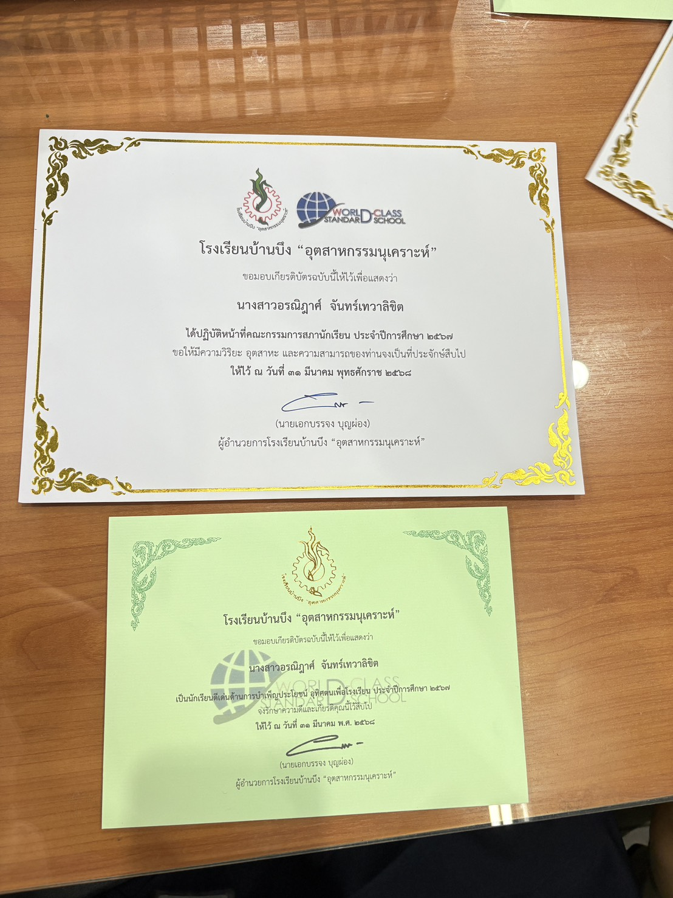
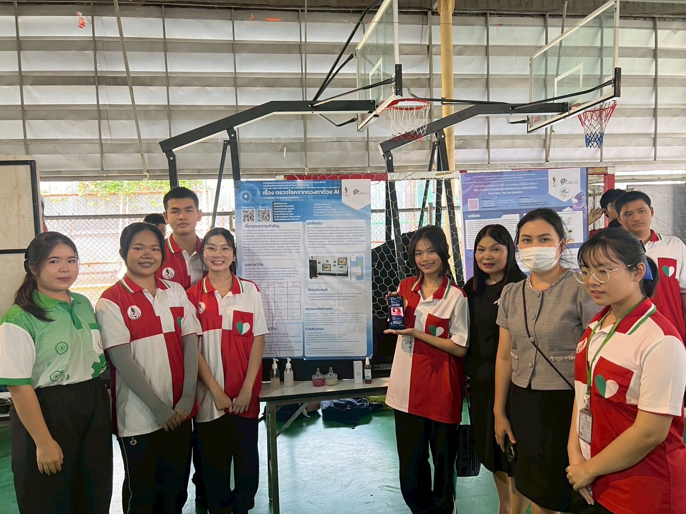

✨ กิจกรรมที่เข้าร่วม

📜 คณะกรรมการสภานักเรียน ปีการศึกษา 2567
ปฏิบัติหน้าที่เป็นคณะกรรมการสภานักเรียน โรงเรียนบ้านบึง "อุตสาหกรรมนุเคราะห์" ประจำปีการศึกษา 2567

🌟 นักเรียนดีเด่นด้านการบำเพ็ญประโยชน์ ปีการศึกษา 2567
ได้รับเกียรติบัตรเชิดชูเกียรติเป็นนักเรียนดีเด่นด้านการบำเพ็ญประโยชน์ อุทิศตนเพื่อโรงเรียน ประจำปีการศึกษา 2567

🏥 การฝึกปฏิบัติงาน ณ โรงพยาบาลบ้านบึง
ได้เข้าร่วมรับการฝึกปฏิบัติงานจริง ณ กลุ่มงานการพยาบาล โรงพยาบาลบ้านบึง ระหว่างวันที่ 1, 5-8 พฤษภาคม พ.ศ. 2569 เพื่อเรียนรู้ทักษะการทำงานในสายงานด้านการแพทย์ การพยาบาล และระบบการดูแลผู้ป่วยอย่างเป็นมืออาชีพ

🎤 ตัวแทน อย.น้อย ขึ้นบรรยายให้ความรู้
เป็นตัวแทนแกนนำ อย.น้อย ขึ้นบรรยายให้ความรู้เรื่องการเลือกซื้อและการเลือกใช้เครื่องสำอางอย่างถูกต้องและปลอดภัย ณ โรงเรียนบ้านบึง "อุตสาหกรรมนุเคราะห์" เพื่อส่งเสริมความตระหนักรู้ด้านสุขภาพและการบริโภคอย่างปลอดภัยให้แก่เพื่อนๆ นักเรียน

📊 ตัวแทนนำเสนอโครงงาน IS
ได้รับคัดเลือกเป็นตัวแทนนำเสนอโครงงาน IS ณ โรงเรียนบ้านบึง "อุตสาหกรรมนุเคราะห์"